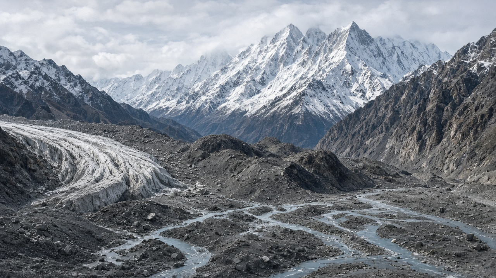
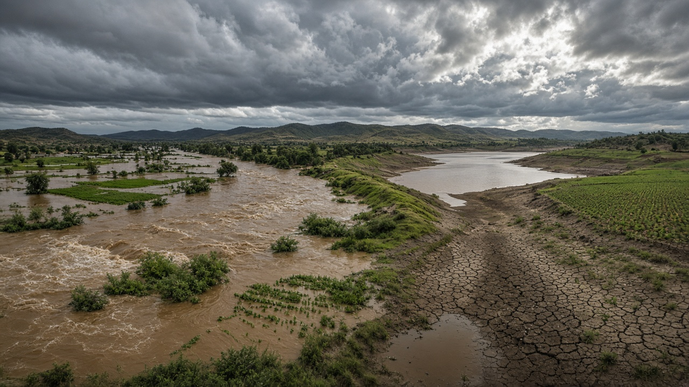
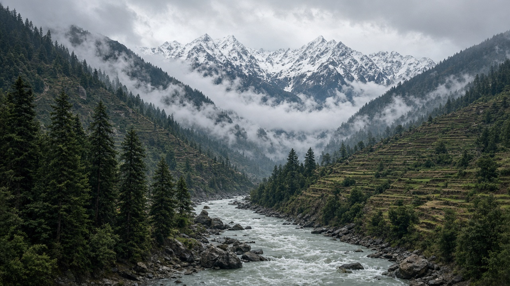

Climate Change Impacts on Water Resources
Published on August 11, 2026

Climate change is reshaping the global water cycle in ways that affect every region, but mountainous and monsoon-dependent countries feel the impacts with particular intensity. Rising temperatures increase evaporation from soils, lakes, and reservoirs while accelerating glacier and snow melt in high-altitude catchments. Some areas experience heavier rainfall and more frequent extreme floods, while others face longer dry spells and reduced river flows during critical agricultural seasons. These shifts disrupt the timing and reliability of water supplies that billions of people depend on for drinking, farming, energy production, and ecosystem support.
In the Hindu Kush Himalaya, research shows that glacial retreat is altering the seasonality of river discharge, with potential short-term increases in meltwater followed by long-term declines as ice reserves shrink. Changing monsoon patterns affect recharge of aquifers, spring sustainability, and the severity of landslide-triggered flash floods. Sea-level rise threatens coastal aquifers with saltwater intrusion, while warmer water temperatures reduce oxygen levels and stress aquatic species. Water managers must therefore move beyond historical averages and plan for greater variability, using climate projections to guide infrastructure design, reservoir operation rules, and drought contingency planning.
Adaptation strategies include strengthening watershed protection, diversifying water sources, improving storage and efficiency, upgrading flood early warning systems, and integrating climate risk into national water policies. Nature-based solutions such as wetland restoration and forest conservation help regulate flows and buffer extremes. Because water resources cross sectors and borders, climate adaptation also requires coordination among energy, agriculture, disaster management, and environmental agencies. Addressing climate impacts on water is not optional; it is central to food security, public health, economic stability, and the ecological integrity of rivers and groundwater systems worldwide.

जलवायु परिवर्तनले विश्वव्यापी जल चक्रलाई पुनः आकार दिँदै छ, जसले हरेक क्षेत्रलाई असर गर्छ, तर पहाडी र मनसुनमा निर्भर देशहरूले यो प्रभाव विशेष गरी तीव्र रूपमा महसुस गर्छन्। बढ्दो तापक्रमले माटो, ताल र जलाशयहरूबाट वाष्पीकरण बढाउँछ, साथै उच्च उचाइका जलग्रहमा हिमनदी र हिउँको गल्ने गति बढाउँछ। केही क्षेत्रहरूमा भारी वर्षा र बढी बारम्बार चरम बाढी हुन्छ, भने अन्यमा लामो सुक्खा र कृषि महत्वपूर्ण मौसममा नदी प्रवाह कम हुन्छ। यी परिवर्तनहरूले पिउने पानी, खेती, ऊर्जा उत्पादन र पारिस्थितिकी तन्त्र समर्थनका लागि अरबौं मानिसहरूले निर्भर गर्ने पानी आपूर्तिको समय र विश्वसनीयतामा व्यवधान ल्याउँछन्।
हिन्दुकुश हिमाल क्षेत्रमा अनुसन्धानले देखाएको छ कि हिमनदीको पछाडतिर हटाइले नदी प्रवाहको मौसमीता परिवर्तन भइरहेको छ, हिम सञ्चय घट्दै जाँदा अल्पकालीन गल्ने पानी बढ्न सक्छ भने दीर्घकालीन रूपमा घट्ने सम्भावना छ। परिवर्तित मनसुन ढाँचाले भू-जल सञ्चार, झाराको स्थिरता र पहिरोजन्य झोलापखाली बाढीको गम्भीरतामा असर पार्छ। समुद्र सतहको वृद्धिले तटीय भू-जलमा नुनिलो पानीको घुसपैठको खतरा बढाउँछ, भने न्यानो पानीले अक्सिजन स्तर घटाउँछ र जलीय प्रजातिहरूमा तनाव सिर्जना गर्छ। त्यसैले जल व्यवस्थापकहरूले ऐतिहासिक औसतभन्दा अगाडि बढेर ठूलो भिन्नताका लागि योजना बनाउनुपर्छ, जलवायु प्रक्षेपणहरूलाई पूर्वाधार डिजाइन, जलाशय सञ्चालन नियम र सुक्खा आकस्मिक योजनाको मार्गदर्शनमा प्रयोग गर्दै।
अनुकूलन रणनीतिहरूमा जलग्रह संरक्षण सुदृढ बनाउने, पानी स्रोत विविधीकरण, भण्डारण र दक्षता सुधार, बाढी प्रारम्भिक चेतावनी प्रणाली स्तरोन्नति, र राष्ट्रिय जल नीतिमा जलवायु जोखिम समावेश गर्ने काम समावेश छ। सिमसार पुनर्स्थापना र वन संरक्षण जस्ता प्रकृति-आधारित समाधानहरूले प्रवाह नियमन र चरम अवस्था न्यूनीकरणमा मद्दत गर्छन्। जल स्रोतहरू क्षेत्र र सीमा पार गर्ने भएकाले, जलवायु अनुकूलनका लागि ऊर्जा, कृषि, विपद् व्यवस्थापन र वातावरणीय निकायहरूबीच समन्वय पनि आवश्यक छ। पानीमा जलवायु प्रभाव सम्बोधन गर्नु वैकल्पिक होइन; यो खाद्य सुरक्षा, सार्वजनिक स्वास्थ्य, आर्थिक स्थिरता र विश्वभरका नदी र भू-जल प्रणालीहरूको पारिस्थितिक अखण्डताको केन्द्रमा छ।

जलवायु परिवर्तन वैश्विक जल चक्र को पुनर्गठन कर रहा है, जो हर क्षेत्र को प्रभावित करता है, लेकिन पर्वतीय और मानसून-निर्भर देश इस प्रभाव को विशेष रूप से तीव्रता से महसूस करते हैं। बढ़ते तापमान से मिट्टी, झीलों और जलाशयों से वाष्पीकरण बढ़ता है, साथ ही उच्च ऊंचाई के जलग्रहों में ग्लेशियर और बर्फ के पिघलने की गति तेज होती है। कुछ क्षेत्रों में भारी वर्षा और अधिक बार चरम बाढ़ होती है, जबकि अन्य में लंबी सूखा और कृषि महत्वपूर्ण मौसमों में नदी प्रवाह कम हो जाता है। ये बदलाव पीने के पानी, खेती, ऊर्जा उत्पादन और पारिस्थितिकी तंत्र समर्थन के लिए अरबों लोगों द्वारा निर्भर जल आपूर्ति के समय और विश्वसनीयता में व्यवधान पैदा करते हैं।
हिन्दुकुश हिमाल क्षेत्र में अनुसंधान दिखाता है कि ग्लेशियर पीछे हटने से नदी प्रवाह की मौसमीता बदल रही है, बर्फ भंडार सिकुड़ने पर अल्पकालिक पिघले पानी में वृद्धि हो सकती है और दीर्घकाल में गिरावट आ सकती है। बदलते मानसून पैटर्न भू-जल पुनःभरण, झरने की स्थिरता और भू-स्खलन से उत्पन्न फ्लैश बाढ़ की गंभीरता को प्रभावित करते हैं। समुद्र स्तर में वृद्धि तटीय भू-जल में खारे पानी के घुसपैठ का खतरा बढ़ाती है, जबकि गर्म पानी ऑक्सीजन स्तर घटाता है और जलीय प्रजातियों पर तनाव डालता है। इसलिए जल प्रबंधकों को ऐतिहासिक औसत से आगे बढ़कर अधिक परिवर्तनशीलता के लिए योजना बनानी चाहिए, जलवायु प्रक्षेपणों का उपयोग बुनियादी ढांचे के डिजाइन, जलाशय संचालन नियमों और सूखा आपात योजना के मार्गदर्शन में करते हुए।
अनुकूलन रणनीतियों में जलग्रह संरक्षण को मजबूत करना, जल स्रोतों का विविधीकरण, भंडारण और दक्षता में सुधार, बाढ़ प्रारंभिक चेतावनी प्रणालियों का उन्नयन, और राष्ट्रीय जल नीतियों में जलवायु जोखिम को एकीकृत करना शामिल है। दलदल बहाली और वन संरक्षण जैसे प्रकृति-आधारित समाधान प्रवाह को नियंत्रित करने और चरम स्थितियों को कम करने में मदद करते हैं। चूंकि जल संसाधन क्षेत्रों और सीमाओं को पार करते हैं, जलवायु अनुकूलन के लिए ऊर्जा, कृषि, आपदा प्रबंधन और पर्यावरण एजेंसियों के बीच समन्वय भी आवश्यक है। जल पर जलवायु प्रभावों को संबोधित करना वैकल्पिक नहीं है; यह खाद्य सुरक्षा, सार्वजनिक स्वास्थ्य, आर्थिक स्थिरता और विश्वभर की नदियों और भू-जल प्रणालियों की पारिस्थितिक अखंडता के केंद्र में है।